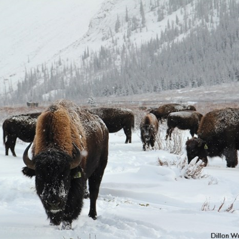
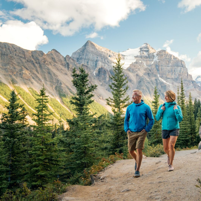
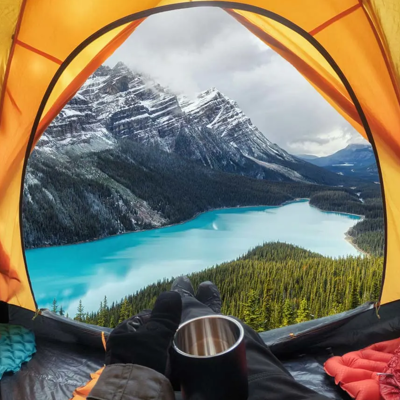
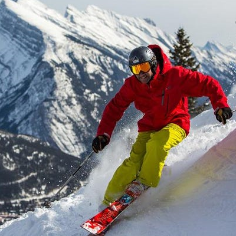

Located in the Canadian Rockies, Banff National Park is Canada's
oldest national park, established in 1885. The park covers over 6,600
square kilometers of wilderness and is home to an array of wildlife,
including grizzly bears, wolves, and elk.

Wildlife
Banff National Park is home to a diverse range of wildlife,
including some of the most iconic and majestic animals of the
Canadian Rockies. The park's varied landscape of mountains, forests,
and lakes provides habitats for a rich array of species, from tiny
rodents to large predators. Some of the more commonly seen animals
in Banff include elk, moose, bighorn sheep, mountain goats, black
bears, and grizzly bears. The park is also home to smaller mammals
such as beavers, porcupines, and coyotes, as well as numerous bird
species.

Hiking
Banff National Park is a hiker's paradise, with over 1,600 km (1,000
mi) of trails winding through stunning mountain landscapes. Whether
you're a seasoned mountaineer or a casual day hiker, there's a trail
for you in Banff. Some of the most popular hiking trails in Banff
include the Plain of Six Glaciers Trail, the Sentinel Pass Trail,
and the Johnston Canyon Trail. Each of these hikes offers
breathtaking views of the surrounding mountains, glaciers, and
lakes.

Camping
Banff National Park is a popular destination for camping enthusiasts
due to its spectacular natural scenery, extensive trail system, and
numerous camping facilities. The park offers 13 campgrounds with a
total of over 2,400 campsites that can accommodate various types of
camping equipment, from tents to RVs. Most campgrounds in Banff are
open from May to October, and reservations are highly recommended,
especially during peak season. Some campgrounds offer first-come,
first-served sites as well. Campsites typically have amenities such
as picnic tables, fire pits, and access to potable water and
washrooms.

Skiing
Banff is a world-renowned ski destination with three major ski
resorts: Banff Norquay, Lake Louise Ski Resort, and Sunshine
Village. Each resort has its own unique terrain and character, with
runs ranging from beginner to expert.Banff is a world-renowned ski
destination with three major ski resorts: Banff Norquay, Lake Louise
Ski Resort, and Sunshine Village. Each resort has its own unique
terrain and character, with runs ranging from beginner to expert.